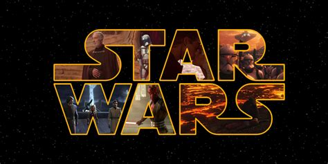

<nav class="navbar navbar-expand-lg navbar-light bg-light">
       <button class="navbar-toggler" type="button" data-toggle="collapse" data-target="#navbarNav" aria-controls="navbarNav" aria-expanded="false" aria-label="Toggle navigation">
      <span class="navbar-toggler-icon"></span>
    </button>
    <div class="collapse navbar-collapse" id="navbarNav">
      <ul class="navbar-nav">
        <li class="nav-item active">
          <a class="nav-link" routerLink="/home">Home</a> 
          <!-- routerLink permet de renvoyer vers le chemin que l'on indique-->
        </li>
        <li class="nav-item">
          <a class="nav-link" routerLink="/vaisseau">Vaisseaux</a>
        </li>
        <li class="nav-item">
          <a class="nav-link" routerLink="/planet">Planètes</a>
        </li>
          </ul>
    </div>
  </nav>


Hello, on est le : {{date | date: "dd/MM/yyyy" }}

{{developper | initiales}}